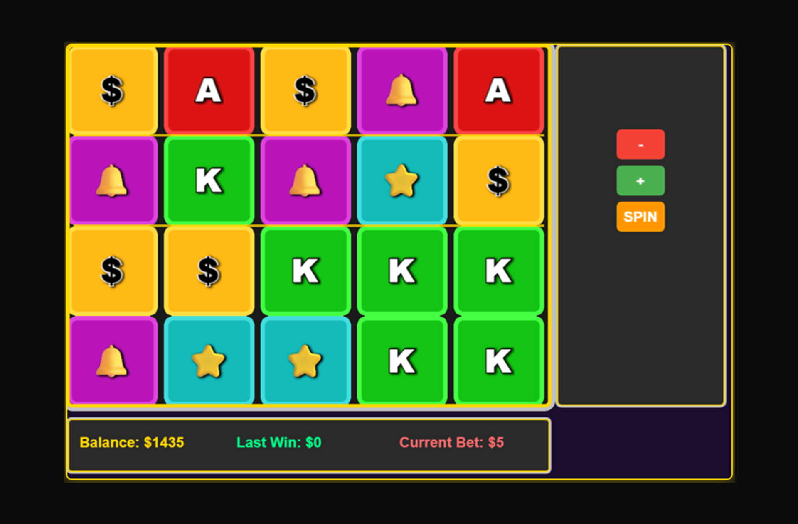
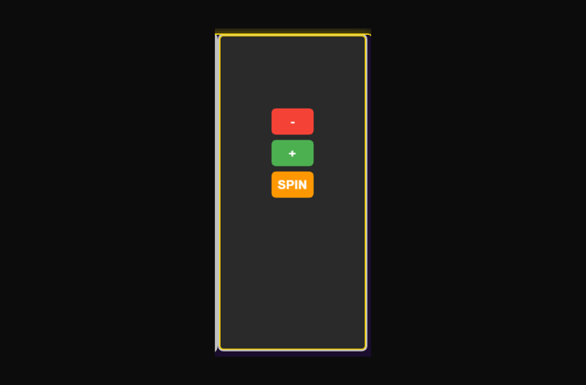
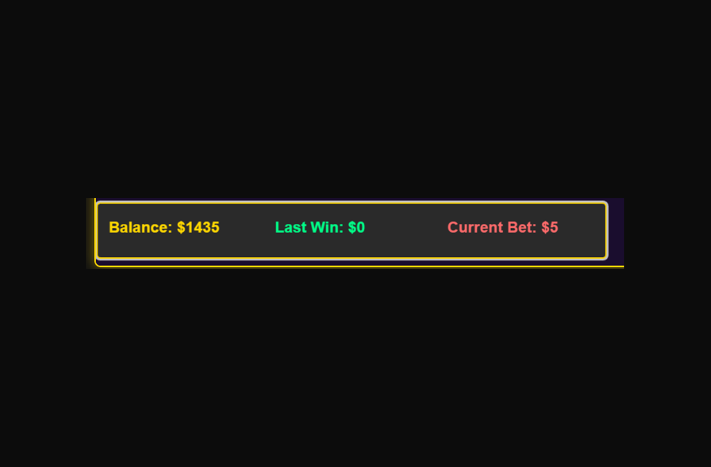

Plongez dans l'univers captivant des machines à sous avec ce jeu immersif. Testez votre chance et vos compétences en alignant les symboles pour décrocher le jackpot. Avec des graphismes époustouflants, chaque spin est une nouvelle aventure.